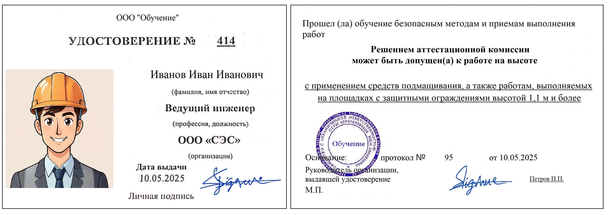
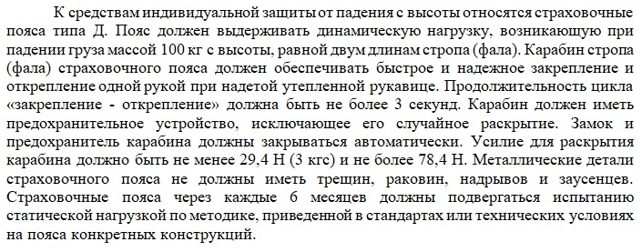

Работы на высоте

Работы на высоте являются критически важной частью любого строительного проекта, и проверка соблюдения норм безопасности в этом разделе проводится особенно тщательно. Здесь сразу указывается используемый регламент, регулирующий проведение высотных работ.
Согласно правилам, любые операции на высоте свыше трех метров требуют обязательного ограждения рабочей зоны и использования защитной экипировки специалистами. В данном разделе детально расписаны меры, необходимые для обеспечения безопасности исполнителей.
Раздел формируется из следующих положений:
Необходимость соблюдения правил: при работе на высоте нужно соблюдать «Правила по охране труда при работе на высоте», утверждённые Министерством труда и социальной защиты РФ приказом № 782н от 16.11.2020
Определение работ на высоте: к работам на высоте относятся те, при которых работник находится на расстоянии менее 2 м от неогражденных перепадов по высоте 1,3 м и более.
Меры безопасности при отсутствии ограждений: при невозможности устройства ограждений работы должны выполняться с применением предохранительного пояса и страховочного каната.
Верхолазные работы:
считаются работами, выполняемыми на высоте более 5 м;
относятся к работам повышенной опасности;
проводятся по наряду-допуску, в котором предусматриваются организационные и технические мероприятия по подготовке и безопасному выполнению работ.
Требования к возрасту и здоровью работников:
к работе на высоте допускаются лица, достигшие 18 лет;
работники должны проходить обязательные предварительные (при поступлении на работу) и периодические медицинские осмотры.
Квалификация и обучение работников:
работники должны иметь квалификацию, соответствующую характеру выполняемых работ;
допуск к работам осуществляется только после обучения и проверки знаний требований охраны труда, а также обучения безопасным методам производства работ на высоте.

Группы допуска:
рабочие, непосредственно выполняющие работы на высоте, должны иметь 1 группу допуска;
мастера, бригадиры — 2 группу допуска;
3 группу допуска должны иметь работники, ответственные за организацию и безопасное проведение работ, проведение инструктажей, составление плана мероприятий по эвакуации и спасению работников при аварийной ситуации.
Обязанности работодателя:
обеспечить использование устройств и средств подмащивания, механизмов, а также средств коллективной и индивидуальной защиты;
организовать разработку документации по охране труда, планов мероприятий по эвакуации и спасению работников, технологических карт на производство работ;
организовывать выдачу средств защиты и обеспечить их своевременное обслуживание, проверку и браковку;

организовать обучение работников безопасным методам и приёмам выполнения работ на высоте, проведение соответствующих инструктажей по охране труда.
Требования к рабочим местам:
все рабочие места на площадках и настилах должны быть оборудованы ограждениями не ниже 1,1 м с перилами, бортовой доской высотой не менее 150 мм, защитными и предохранительными устройствами;
рабочие должны снабжаться проверенными и испытанными предохранительными поясами;
на площадках должны присутствовать системы спасения и эвакуации.
Ограничения на выполнение работ:
не допускается выполнение работ на высоте в открытых местах при скорости ветра 15 м/с и более;
запрещено работать при грозе или тумане, исключающем видимость в пределах фронта работ, а также при гололёде.
Давайте перейдем к практике. Выполните упражнение и определите, какие случаи относятся к работам на высоте.